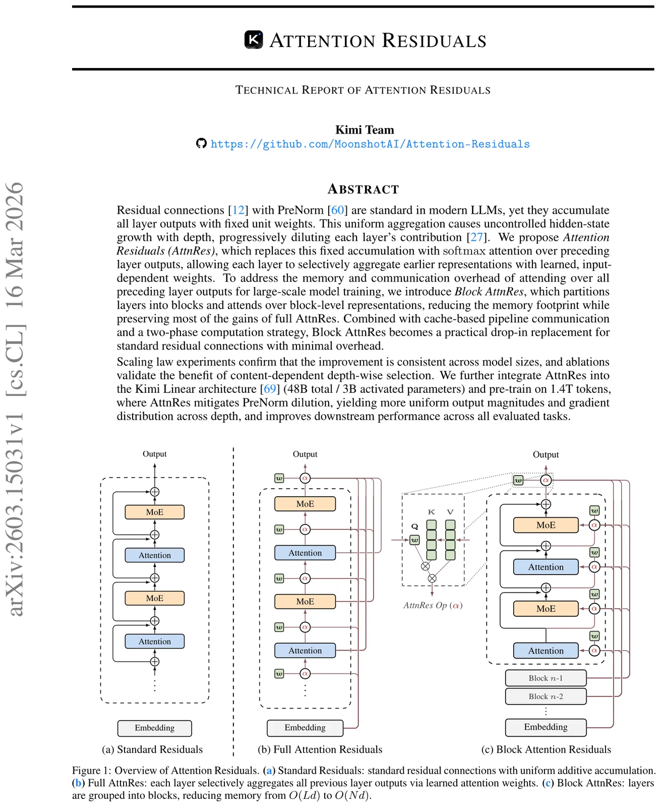
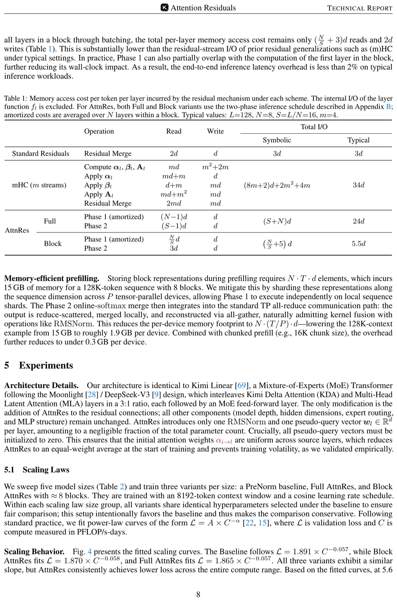
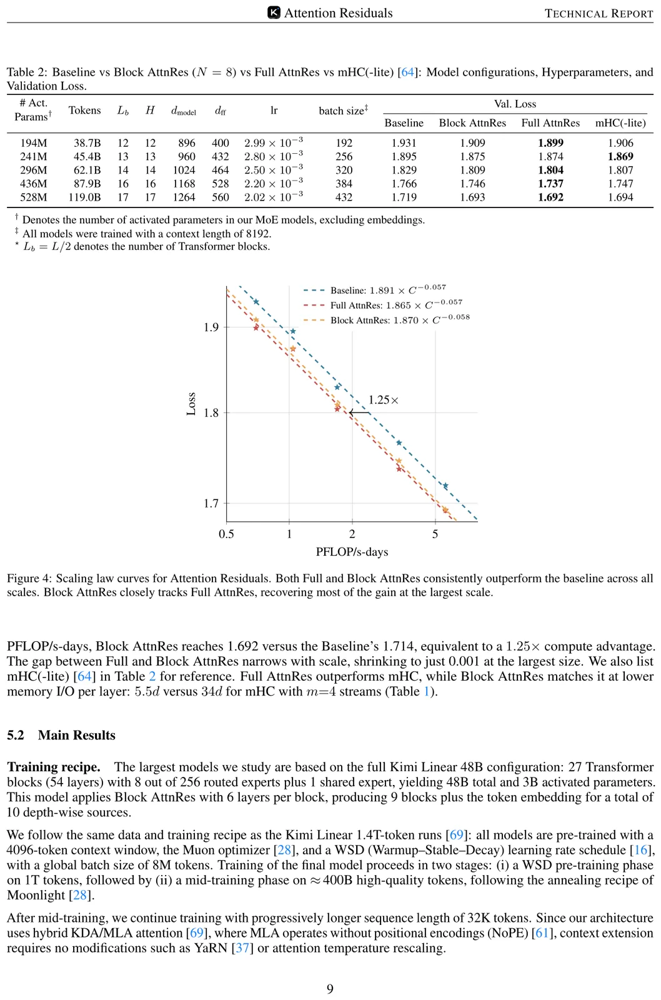
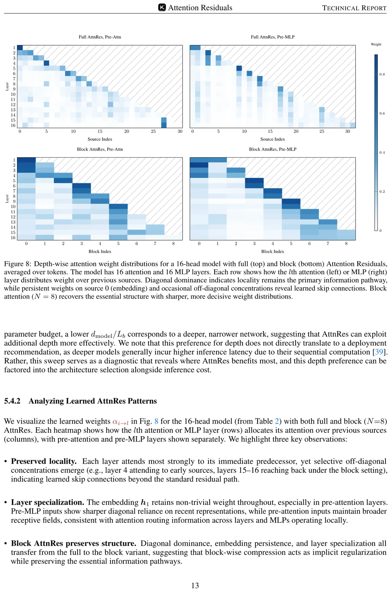
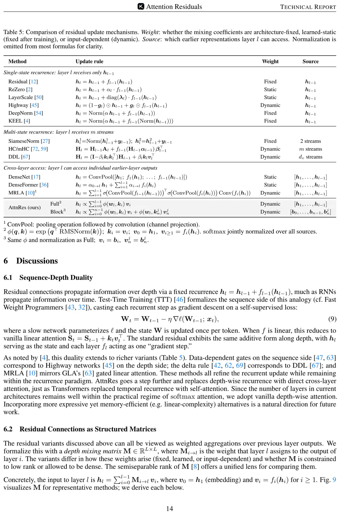

Attention Residuals (AttnRes)
论文: Attention Residuals
团队: Kimi Team (Moonshot AI)
代码: fla-org/flash-linear-attention — fla/ops/attnres/
问题动机
标准残差连接 h_l = h_{l-1} + f_{l-1}(h_{l-1}) 展开后得到：
即每层的输入是之前所有层输出的等权求和。这种固定的 uniform 聚合带来三个问题：
- 无选择性访问：每一层只能看到单个压缩后的状态 h_{l-1}，无法选择性地从不同前层中获取信息
- 信息不可逆丢失：一旦某层信息在聚合中被稀释，后续层无法恢复
- 输出增长 (PreNorm dilution)：使用 PreNorm 时，隐状态的 magnitude 以 O(L) 增长，迫使更深的层学习越来越大的输出才能有影响力

核心想法
时间-深度对偶 (Time-Depth Duality)：残差连接在深度上的固定累加，本质上类似 RNN 在时间上的压缩。正如 Transformer 用 attention 替代了时间维度上的 RNN 循环，AttnRes 用 softmax attention 替代深度维度上的固定等权累加：
其中 \alpha_{i \to l} 是学习到的、输入依赖的 (input-dependent) 注意力权重。
方法细节
3.1 Full Attention Residuals
对每一层 l，定义：
其中 w_l \in \mathbb{R}^d 是每层一个的可学习 pseudo-query 向量。
注意力权重使用 softmax + RMSNorm 计算：
每层的输入为：
复杂度：O(L^2 d) 计算，O(Ld) 存储。由于 L < 1000（远小于序列长度），计算开销很小。
关键设计：pseudo-query w_l 是与前向计算解耦的参数，意味着可以并行 batch 计算多层的注意力权重。
3.2 Block Attention Residuals
为解决大规模训练中 pipeline parallelism 的通信开销，将 L 层划分为 N 个 block：
块内累加 (Intra-Block)：
块间注意力 (Inter-Block)：对块 n 中的第 i 层：
其中 b_0 = h_1（token embedding 始终参与），b_n^{i-1} 为块内的 partial sum。
效率：内存从 O(Ld) 降到 O(Nd)，计算从 O(L^2) 降到 O(N^2)。实验表明 N \approx 8 就能恢复 Full AttnRes 的绝大部分收益。
3.3 PyTorch Pseudocode (Block AttnRes)
论文 Figure 2 给出了核心伪代码：
def block_attn_res(blocks, partial_block, proj, norm):
"""
blocks: list of [B, T, D] — 已完成的 block 表示
partial_block: [B, T, D] — 块内 partial sum
"""
V = torch.stack(blocks + [partial_block]) # [N+1, B, T, D]
K = norm(V) # RMSNorm on keys
logits = torch.einsum('d, n b t d -> n b t', proj.weight.squeeze(), K)
h = torch.einsum('n b t, n b t d -> b t d', logits.softmax(0), V)
return h
def forward(self, blocks, hidden_states):
partial_block = hidden_states
# AttnRes before Attention
h = block_attn_res(blocks, partial_block, self.attn_res_proj, self.attn_res_norm)
# Block boundary check
if self.layer_number % (self.block_size // 2) == 0:
blocks.append(partial_block)
partial_block = None
# Self-Attention
attn_out = self.attn(self.attn_norm(h))
partial_block = partial_block + attn_out if partial_block is not None else attn_out
# AttnRes before MLP
h = block_attn_res(blocks, partial_block, self.mlp_res_proj, self.mlp_res_norm)
# MLP
mlp_out = self.mlp(self.mlp_norm(h))
partial_block = partial_block + mlp_out
return blocks, partial_block
3.4 fla 库的实际实现
在 fla/ops/attnres/naive.py 中，naive 参考实现如下：
def naive_attnres(query, residuals, rms_weight, output_rms_weight=None,
rms_eps=1e-6, scale=1.0, return_weights=False):
"""
query: [D] — 每层的 pseudo-query (w_l)
residuals: L 个 [..., D] 的 tensor — 各 source 层的输出
rms_weight: [D] — RMSNorm 的 scale 参数
output_rms_weight: 可选的输出 RMSNorm（融合 prenorm）
"""
stacked = torch.stack([r.view(-1, D) for r in residuals], dim=0)
v = stacked.float()
k = F.rms_norm(v, (D,), rms_weight.float(), rms_eps) # RMSNorm on keys
p = einsum(k, query.float() * scale, "l ... d, d -> l ...").softmax(dim=0) # softmax over depth
o = einsum(p, v, "l ..., l ... d -> ... d") # weighted sum
if output_rms_weight is not None:
o = F.rms_norm(o, (D,), output_rms_weight.float(), rms_eps)
return o.to(stacked.dtype)
Triton 融合实现 (fla/ops/attnres/fused.py) 使用 online softmax 在单次遍历中完成：
- 遍历所有 source，对每个 tile 计算 RMSNorm → logit → online softmax update
- 保存
rstd和logit供反向传播使用 - 可选地融合输出 RMSNorm（即下一层的 prenorm）
3.5 模型集成方式 (TransformerBlock)
在 fla/models/transformer/modeling_transformer.py 中的集成：
class TransformerBlock(nn.Module):
def __init__(self, config, layer_idx):
# 每个子层（attn/mlp）各有一对 (proj, norm)
self.attn_res_proj = nn.Linear(hidden_size, 1, bias=False) # pseudo-query
self.attn_res_norm = nn.RMSNorm(hidden_size) # key norm
self.mlp_res_proj = nn.Linear(hidden_size, 1, bias=False)
self.mlp_res_norm = nn.RMSNorm(hidden_size)
# 判断是否为 block 边界
block_size = config.attnres_block_size
self.attnres_is_attn_boundary = (2 * layer_idx) % block_size == 0
self.attnres_is_mlp_boundary = (2 * layer_idx + 1) % block_size == 0
# 重要：proj 权重 zero-init，保证初始 softmax 权重均匀
self.attn_res_proj._is_attnres_proj = True # 标记用于 _init_weights
def forward(self, hidden_states, attnres_states=None, ...):
prefix_sum = hidden_states # running partial sum
# 构建 residuals = [已完成 blocks..., 当前 partial_sum]
residuals = [*attnres_states, prefix_sum]
# 如果到达 block 边界，把当前 partial_sum 加入 attnres_states
if self.attnres_is_attn_boundary:
attnres_states = residuals
prefix_sum = None
# AttnRes 替代 prenorm：融合 attn_norm
hidden_states = fused_attnres(
query=self.attn_res_proj.weight,
residuals=residuals,
rms_weight=self.attn_res_norm.weight,
output_rms_weight=self.attn_norm.weight, # 融合 prenorm
rms_eps=self.attn_res_norm.eps,
)
# Attention
hidden_states = self.attn(hidden_states)
prefix_sum = prefix_sum + hidden_states if prefix_sum is not None else hidden_states
# 类似地对 MLP 执行 AttnRes...
3.6 初始化策略
所有 pseudo-query 向量必须 zero-init。这确保训练初始阶段注意力权重 \alpha_{i \to l} 对所有 source 均匀，AttnRes 退化为等权平均，避免训练不稳定。
3.7 Two-Phase 推理策略 (Algorithm 1)
由于 w_l 与前向计算解耦，可以 batch 处理：
- Phase 1 (并行)：将块内所有 S 个 query batch 起来，对之前的 n-1 个 block 做一次 batched attention → 得到 output + lse
- Phase 2 (顺序)：对块内依次处理，对 intra-block partial sum 做 attention，用 online softmax merge 与 Phase 1 结果合并
这将 per-layer I/O 从 O(Ld) 降低到 O\left(\frac{N}{S} + 5\right)d \approx 5.5d。
关键结果
Scaling Laws

- Baseline: L = 1.891 \times C^{-0.057}
- Block AttnRes: L = 1.870 \times C^{-0.058}
- Full AttnRes: L = 1.865 \times C^{-0.057}
Block AttnRes 达到了等效于 baseline 1.25× compute 的效果。Full 与 Block 的差距随规模增大而缩小（最大规模仅差 0.001）。
训练动态

- Validation loss: AttnRes 全程更低，decay 阶段差距拉大
- Output magnitude: Baseline 单调增长 (PreNorm dilution)；Block AttnRes 呈现有界周期性模式
- Gradient magnitude: Baseline 最浅层梯度异常大；AttnRes 梯度分布更均匀
Downstream Performance (48B 参数, 1.4T tokens)
| Benchmark | Baseline | AttnRes | \Delta |
|---|---|---|---|
| MMLU | 73.5 | 74.6 | +1.1 |
| GPQA-Diamond | 36.9 | 44.4 | +7.5 |
| BBH | 76.3 | 78.0 | +1.7 |
| Math | 53.5 | 57.1 | +3.6 |
| HumanEval | 59.1 | 62.2 | +3.1 |
| MBPP | 72.0 | 73.9 | +1.9 |
多步推理任务受益最大，与假设一致：改善深度信息流有利于组合性任务。
Ablation Study
| Variant | Loss |
|---|---|
| Baseline (PreNorm) | 1.766 |
| DenseFormer (fixed weights) | 1.767 |
| mHC (m streams) | 1.747 |
| Full AttnRes | 1.737 |
| Block AttnRes (S=4) | 1.746 |
| w/ input-dependent query | 1.731 (但多一个 d×d proj) |
| w/ sigmoid (代替 softmax) | 1.741 |
| w/o RMSNorm | 1.743 |
| Sliding Window (W=8+1) | 1.764 |
| Multihead (H=16) | 1.752 |
关键发现：
- softmax 优于 sigmoid（竞争性归一化带来更尖锐的选择）
- 单头优于多头（最优深度混合在通道间基本一致）
- RMSNorm 必不可少（防止大 magnitude 的层主导 softmax）
- Sliding window 远不如 Full/Block（选择性访问远处层比只看近处多层更重要）
学到的注意力模式

三个关键观察：
- 保持局部性：每层最强注意力在前驱，但有选择性的 off-diagonal 跳连
- 层类型特化：pre-attention 层保持较宽的感受野；pre-MLP 层依赖近期表示
- Embedding 持续参与：h_1 在所有层都维持非零权重
深度混合矩阵视角

统一的结构化矩阵视角
所有残差变体可以统一为深度混合矩阵 M \in \mathbb{R}^{L \times L}，其中 M_{i \to l} 是层 l 对层 i 输出的权重：
| 方法 | 混合矩阵结构 | 权重类型 |
|---|---|---|
| Standard Residual | 全 1 下三角 (rank-1 semiseparable) | Fixed |
| Highway | 1-semiseparable (stick-breaking) | Dynamic |
| (m)HC | m-semiseparable | Dynamic |
| Full AttnRes | Dense rank-L | Dynamic |
| Block AttnRes | rank ∈ [N, N+S] | Dynamic |
核心 insight：标准残差和 Highway/(m)HC 本质是深度维度的线性注意力，而 AttnRes 是深度维度的 softmax 注意力——完成了与序列维度上"线性→softmax"相同的进化。
局限与延伸阅读
局限：
- Full AttnRes 的 O(Ld) 通信在当前硬件下对 pipeline parallelism 不友好（这正是 Block 版本存在的原因）
- Block 大小的选择需要和 pipeline stage 数量协调
- 比标准残差多了少量参数和计算（训练 <4% overhead, 推理 <2% latency overhead）
与其他工作的关系：
- DenseFormer [Pagliardini+ 2024]: 静态 input-independent 权重，无增益
- (m)HC [Zhu+ 2025 / Xie+ 2026]: m 条并行流 + 学习的混合矩阵，等价于深度维度线性注意力
- DDL [Zhang+ 2026]: 矩阵状态 + delta rule，对应深度维度的 DeltaNet
- MRLA [Fang+ 2023]: 类似于深度维度的 GLA
- Value Residual Learning [Zhou+ 2025]: 只访问单个早期层
- MUDDFormer [Xiao+ 2025]: 位置依赖权重，4 条流
AttnRes 统一了这些方法，并在实验中全面超越。